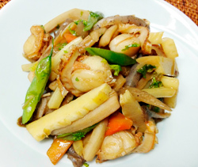

ホタテと筍の春きんぴら
- 調理時間：15 分
- （一人当たり）
- カロリー：241kcal
- たんぱく質：13.2g
- 脂質：8.7g
- 炭水化物：26.5g
- 塩分：2.6g


＜2人分＞
- ホタテ（ボイル）
- 100g
- タケノコ（細切り）
- 80g
- ゴボウ（ささがき）
- 100g
- レンコン（イチョウ切り）
- 50g
- ニンジン（短冊切り）
- 30g
- セロリ
（茎は小口切り、葉はざく切り） - 50g
- サヤインゲン
（先にゆでる） - 5～6本
- ショウガ（千切り）
- 1片
- コンニャク（細切り）
- 1/3枚
- ゴマ油
- 大さじ1
- みりん
- 大さじ2
- 醤油
- 大さじ2
- 塩
- 少々


- 材料を切る。（切り方は材料参照）
- フライパンを熱し、コンニャクを乾煎りにする。
水分が半ば抜けたら、ごま油を加え、ショウガを炒める。
香りがでたら、ゴボウ、レンコン、ニンジン、タケノコを加えてさらに炒める。 - 火が通ったら、ホタテ、セロリの茎を加えて炒め、みりんを加えて炒める。
- セロリの葉、サヤインゲンを加えて炒め、醤油と塩で味を調節する。
ホタテと筍の春きんぴら
～まさかりかついだきんたろう♪～野菜を細切りにして醤油や砂糖、みりんなどで甘辛く炒めた料理を「金平」と呼びますがその「金平」は、昔話で有名な金太郎の息子の名前といわれています。
諸説ありますが、江戸時代に人形浄瑠璃の「金平浄瑠璃（きんぴらじょうるり）」が流行しました。金平浄瑠璃は、源頼義が坂田金平たちと京の平和を守るお話で、力強く勇ましい金平が大活躍しますが、この中で金平を演じた役者の髪型が、ゴボウの細切りに似ていることから「きんぴらごぼう」になったとのこと。そして坂田金平のイメージから、強いものや頑丈なものを「金平〇〇」と呼ぶようになりました。昨今はゴボウだけでなく、様々な食材で作るようになった金平。旬の食材をつかった季節ごとの醍醐味をぜひ。